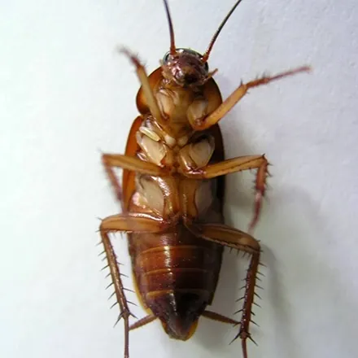
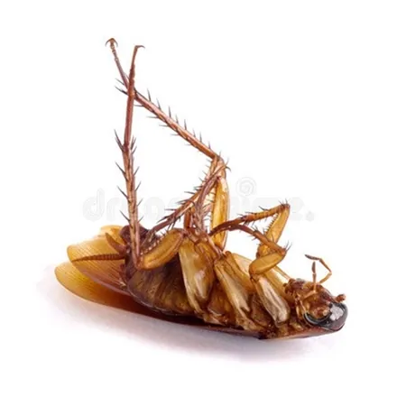

سوسک یا سوسری، سرسختترین آفت خانگی است؛ حشرهای که میتواند تا یک هفته بدون غذا زنده بماند، از باریکترین درزها عبور کند و با سرعتی باورنکردنی تکثیر شود. اگر ساکن کرج هستید و حتی یک سوسک در آشپزخانه دیدهاید، احتمالاً تعداد بیشتری در پشت کابینتها و داخل لولهها پنهان شدهاند. در این راهنما، انواع سوسکهای رایج در ایران، نشانههای آلودگی، خطرات بهداشتی، روشهای خانگی و محدودیتهای آنها و روند سمپاشی تخصصی سوسک در کرج را قدمبهقدم بررسی میکنیم.
شناخت سوسک و انواع رایج آن در ایران
سوسریها از راسته Blattodea هستند و بیش از سه هزار گونه از آنها در جهان شناسایی شده است؛ اما فقط چند گونه محدود وارد خانهها و محیطهای کاری میشوند. مقاومت این حشره زبانزد است: سوسک میتواند در صورت قطع شدن سر تا چند هفته زنده بماند، حدود یک هفته بدون غذا دوام بیاورد و ۳۰ تا ۴۵ دقیقه بدون هوا سر کند. همین سازگاری فوقالعاده بههمراه تولیدمثل سریع، باعث میشود مبارزه سطحی با آن تقریباً همیشه شکست بخورد.
در خانهها و مغازههای ایران سه گونه بیش از بقیه دیده میشوند: سوسری آلمانی (همان سوسک ریز آشپزخانه)، سوسری آمریکایی (سوسک درشت فاضلاب که در کرج به آن سوسک حمام هم میگویند) و سوسری شرقی. شناخت گونه اهمیت عملی دارد، چون محل تجمع و روش دفع هرکدام متفاوت است:
| گونه | اندازه تقریبی | رنگ و ظاهر | محل رایج در ساختمان |
|---|---|---|---|
| سوسری آلمانی | ۱۲ تا ۱۶ میلیمتر | قهوهای روشن با دو نوار تیره روی پشت | کابینت آشپزخانه، پشت یخچال، اطراف سینک |
| سوسری آمریکایی | ۳۵ تا ۴۰ میلیمتر | قهوهای مایل به قرمز و براق | فاضلاب، حمام، موتورخانه، زیرزمین |
| سوسری شرقی | ۲۰ تا ۳۰ میلیمتر | قهوهای بسیار تیره تا سیاه | مکانهای خنک و مرطوب، کفشور، انباری |
سوسری آلمانی خطرناکترین گونه از نظر سرعت گسترش است؛ هر کپسول تخم آن حدود ۳۰ نوزاد (نیمف) دارد و حشره ماده کپسول را تا لحظه باز شدن با خود حمل میکند. به همین دلیل حتی چند سوسک ریز در کابینت میتواند در چند ماه به آلودگی گسترده تبدیل شود.
نشانههای آلودگی به سوسک در خانه
سوسکها شبفعالاند و روزها پنهان میشوند؛ بنابراین ندیدن سوسک به معنی نبودن آن نیست. اگر این نشانهها را در خانه یا محل کار خود میبینید، به احتمال زیاد آلودگی شکل گرفته است:
- فضولات ریز: دانههای سیاه شبیه پودر قهوه یا فلفل با پهنای کمتر از یک میلیمتر، معمولاً کنج کابینتها و کشوها.
- پوستههای بهجامانده: نیمفها تا بلوغ پنج تا هشت بار پوستاندازی میکنند و پوستههای شفاف قهوهای از خود به جا میگذارند.
- لکههای قهوهای نامنظم: در محل عبور سوسکها روی سطوح افقی و محل اتصال دیوار به کف، بهویژه در نقاط مرطوب.
- کپسولهای تخم: محفظههای کوچک قهوهای شبیه لوبیا در شکافها، پشت لوازم برقی و زیر سینک.
- بوی ماندگی و ناخوشایند: در آلودگیهای شدید، بوی خاص و ماندهٔ سوسک در فضاهای بسته قابل تشخیص است.
- دیدن سوسک در روز: نشانه شلوغ شدن مخفیگاهها و بالا بودن جمعیت است و یعنی زمان اقدام جدی رسیده است.
خطرات و بیماریهای ناشی از سوسک
سوسکها از فاضلاب، زباله و سطوح آلوده عبور میکنند و سپس روی ظروف، مواد غذایی و سطوح آشپزخانه راه میروند؛ به همین دلیل ناقل مکانیکی میکروبها محسوب میشوند. مهمترین خطرات حضور آنها عبارت است از:
- انتقال باکتریهای عامل مسمومیت و عفونتهای گوارشی مانند سالمونلا و اشریشیا کلی به مواد غذایی و ظروف.
- تشدید آسم و حساسیتهای تنفسی، بهویژه در کودکان؛ فضولات و پوستههای سوسک از آلرژنهای شناختهشده هستند.
- فساد و آلوده شدن مواد غذایی انبارشده.
- اضطراب و آسیب به اعتبار کسبوکار؛ مشاهده یک سوسک در رستوران یا کافه میتواند مشتری را برای همیشه از دست بدهد و در بازرسیهای بهداشتی مشکلساز شود.
راههای پیشگیری از ورود سوسک
پیشگیری همیشه سادهتر و کمهزینهتر از مبارزه است. این اقدامات را بهصورت مستمر انجام دهید تا خانه برای سوسکها جذاب نباشد:
- مواد غذایی خشک را در ظروف دربسته نگهداری کنید و چیزی را بدون پوشش روی پیشخوان نگذارید.
- باقیماندهٔ غذا و چکههای مایعات را همان شب پاک کنید؛ سینک را خشک و تمیز بخوابانید.
- زباله را روزانه خارج کنید و سطلهای دردار به کار ببرید؛ ظرف غذای حیوان خانگی را شبها خالی کنید.
- درز اطراف لولهها، دریچههای فاضلاب و دیوارهای مشترک با همسایه را با درزگیر مسدود کنید؛ اینها مسیر اصلی ورود سوسری آلمانی و آمریکایی به واحدهای آپارتمانی است.
- کارتنها، روزنامههای قدیمی و خرتوپرتهای انباشته را جمع کنید؛ شلوغی یعنی مخفیگاه.
- کفشورها را شبها ببندید یا توری بگذارید و چکهٔ شیرها و لولهها را تعمیر کنید؛ سوسک بدون آب دوام نمیآورد.
روشهای خانگی دفع سوسک و محدودیتهای آنها
برای آلودگیهای تازه و محدود، چند روش خانگی میتواند جمعیت سوسک را کم کند: تلههای چسبی برای شناسایی محل تردد، ژلهای طعمهای آماده، ترکیب اسید بوریک با کمی خمیر قند در نقاط دور از دسترس کودکان و اسپریهای حشرهکش خانگی برای از بین بردن حشرات در دیدرس.
اما محدودیت این روشها را باید صادقانه بدانید: اسپریها فقط سوسکهایی را از بین میبرند که میبینید، نه کلونی پنهان در عمق دیوارها و لولهها؛ تخمها داخل کپسول در برابر بیشتر سموم خانگی مقاوماند و چند هفته بعد نسل جدید بیرون میآید؛ و استفاده تکراری از یک سم بازاری باعث مقاوم شدن سوسکها میشود. اگر سوسک را مرتب میبینید یا آلودگی به چند نقطهٔ خانه رسیده، روش خانگی معمولاً فقط زمان از دست میدهد و لازم است سراغ سمپاشی تخصصی بروید. ضمناً اگر همراه سوسک، آثار حشرات دیگری مانند ساس را هم در خانه میبینید، راهنمای سمپاشی ساس در کرج را بخوانید؛ روش مبارزه با این دو حشره کاملاً متفاوت است.
روند سمپاشی تخصصی سوسک در آرام محیط البرز
شرکت آرام محیط البرز با مجوز رسمی وزارت بهداشت، درمان و آموزش پزشکی و با مدیریت مهندس فاطمه براتی، کارشناس بهداشت محیط، سمپاشی سوسک را در منازل، رستورانها، ادارهها و مراکز درمانی کرج به این صورت انجام میدهد:
۱. مشاوره و بازدید رایگان
کارشناس ما بهصورت رایگان محیط را بررسی میکند، گونهٔ سوسک و شدت آلودگی را تشخیص میدهد و پیش از شروع کار، هزینه دقیق را بهصورت شفاف اعلام میکند.
۲. اجرای سمپاشی با سم مجاز
فقط از سموم دارای مجوز وزارت بهداشت استفاده میشود؛ ترکیب و روش اجرا (ژلگذاری، سمپاشی درزها و شکافها یا ترکیب هر دو) بر اساس نوع محیط و حضور کودک و حیوان خانگی انتخاب میشود تا نتیجه، هم مؤثر و هم کمخطر باشد.
۳. ضمانت کتبی و پیگیری
پس از اجرا، ضمانتنامه کتبی دریافت میکنید و توصیههای بعد از سمپاشی به شما آموزش داده میشود. اگر در دوره ضمانت آلودگی برگردد، سمپاشی مجدد انجام میشود.
عوامل مؤثر بر هزینه سمپاشی سوسک در کرج
هزینه سمپاشی سوسک ثابت نیست و پس از بازدید مشخص میشود؛ اما این عوامل بیشترین تأثیر را دارند:
- مساحت و تعداد فضاهای نیازمند سمپاشی (منزل، مغازه، انبار و…)
- گونهٔ سوسک؛ دفع سوسری آلمانی به دلیل لانهسازی در عمق کابینتها دقت و مواد بیشتری میخواهد.
- شدت و قدمت آلودگی و نیاز به نوبتهای تکمیلی.
- نوع کاربری محیط؛ محیطهای غذایی و درمانی به سموم و پروتکلهای خاص نیاز دارند.
جمعبندی و راه ارتباط
سوسک آفتی نیست که با یک اسپری از بین برود؛ کلونی پنهان، تخمهای مقاوم و مسیرهای ورود از فاضلاب باعث میشوند مبارزه اصولی، ترکیبی از پیشگیری و سمپاشی تخصصی باشد. اگر در کرج و حومه با مشکل سوسک روبهرو هستید، برای مشاوره و بازدید رایگان همین حالا با کارشناسان آرام محیط البرز تماس بگیرید: 09193613357 و 026-34209019. اگر علاوه بر سوسک با جوندگان هم درگیر هستید، مطلب دفع موش و تلهگذاری جوندگان در کرج را از دست ندهید.
سوالات متداول سمپاشی سوسک
سمپاشی سوسک چند ساعت طول میکشد؟
اجرای سمپاشی سوسک برای یک واحد مسکونی معمولی حدود نیم تا یک ساعت زمان میبرد. برای رستورانها، انبارها و محیطهای بزرگتر، مدت اجرا به مساحت و شدت آلودگی بستگی دارد و کارشناس در بازدید اولیه زمان دقیق را اعلام میکند.
بعد از سمپاشی سوسک چه نکاتی را رعایت کنیم؟
چند ساعت پس از سمپاشی از حضور در فضای سمپاشیشده خودداری کنید و سپس خانه را هواگیری کنید. مواد غذایی و ظروف را پیش از سمپاشی بپوشانید یا خارج کنید و تا زمانی که کارشناس اعلام میکند، سطوح سمپاشیشده را نشویید تا اثر سم باقی بماند.
آیا سم سوسک برای کودکان و حیوانات خانگی خطر دارد؟
در آرام محیط البرز فقط از سموم دارای مجوز وزارت بهداشت استفاده میشود و روش اجرا متناسب با حضور کودک، سالمند یا حیوان خانگی انتخاب میشود. کافی است هنگام سمپاشی و چند ساعت پس از آن، کودکان و حیوانات از محیط دور باشند و توصیههای کارشناس رعایت شود.
چرا بعد از سمپاشی هنوز سوسک میبینم؟
دیدن چند سوسک در روزهای اول پس از سمپاشی طبیعی است؛ سم، سوسکها را از مخفیگاه بیرون میکشد و بهتدریج از بین میبرد. اگر پس از دو تا سه هفته همچنان فعالیت جدی دیدید، با پشتیبانی تماس بگیرید تا طبق ضمانت کتبی، سمپاشی مجدد انجام شود.
هزینه سمپاشی سوسک در کرج چقدر است؟
هزینه به مساحت محیط، گونهٔ سوسک، شدت آلودگی و تعداد نوبتهای موردنیاز بستگی دارد. بازدید و مشاوره کارشناسان آرام محیط البرز رایگان است و پیش از شروع کار، قیمت بهصورت شفاف اعلام میشود. برای استعلام با شماره 09193613357 تماس بگیرید.